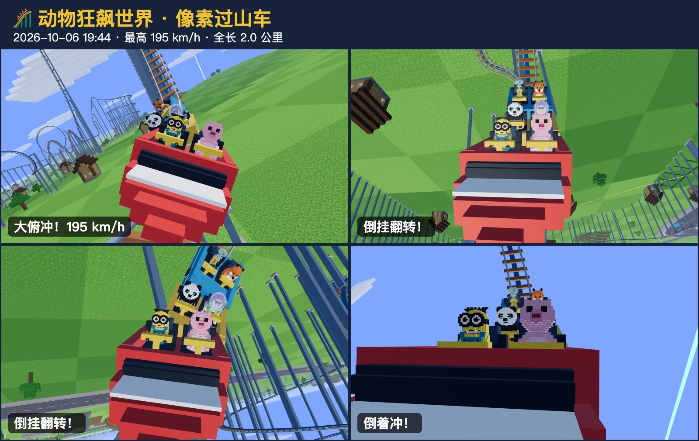
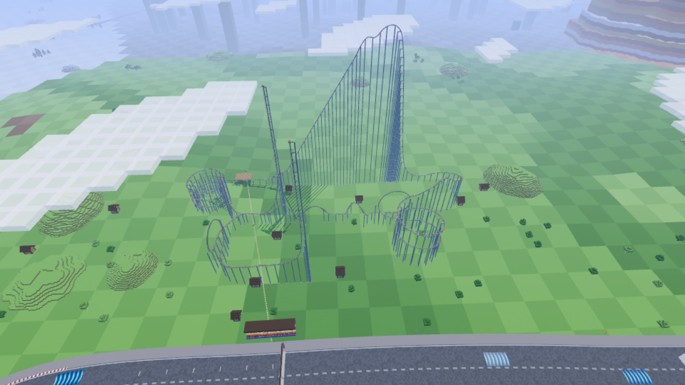
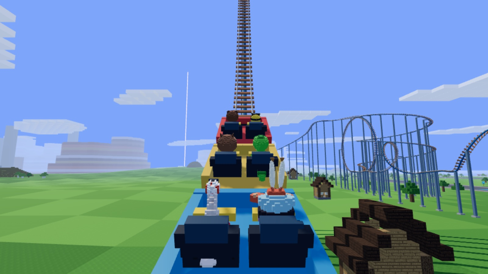

真实的速度
出站慢慢滑，上坡由链条匀速拉动，之后只靠重力：下坡加速、上坡减速，还有阻力和风阻。最快的那一刻在第一个大俯冲的坡底。
链条把你慢慢拉上 155 米，然后几乎垂直地冲下去。翻过回环和螺旋，冲上尖塔、冲不上顶，再倒着滑回来。到站时，车头的相机已经替你拍好了惊险合影。

站台 → 链条提升 → 80° 大俯冲 → 爬升大弯 → 双圈螺旋 → 垂直回环 → 螺旋翻滚 → 零重力翻滚 → 驼峰 → 冲上 128 米尖塔，再倒着滑回来，倒着穿过回环，过道岔切到另一条轨道，倒着冲上第二根尖塔 → 3.3 圈螺旋 → 刹车进站。
出站慢慢滑，上坡由链条匀速拉动，之后只靠重力：下坡加速、上坡减速，还有阻力和风阻。最快的那一刻在第一个大俯冲的坡底。
一圈倒挂 4 次，倒车约 415 米。冲不上尖塔是算出来的，不是写死的，每次掉头的高度都差不多。
坐过山车时角色不再闲聊，只在俯冲、倒挂、开始倒车时喊出「我的妈呀——！」「救救我啊——！」，不会连着重复同一句。


每位车手中英文各 12 句，用每个角色已确认的声音在本地复刻生成。试听另一段时，前一段会自动暂停。
翻过回环的那一刻
倒过来了啊啊啊！
We're upside down!
尖塔上开始倒车
妈妈——我要下去！
Mommy, I want off!
155 米大俯冲
我的妈呀——！
Oh my gosh—!
菜单里选像素风格和自由驾驶。乐园旁的 🎢 站台有路标和地面路线指过去，小地图上也有标记。
按 F 下车，从南边台阶走上站台，按 E 选择一个人坐或邀请朋友。
T 或屏幕按钮在跟随、第一人称、自由环绕、全景四种视角之间切换；E / F / Esc 随时下车。
跑完一圈自动回站，弹出惊险合影。
左上角控件里的「拍照」截下当前画面，不带按钮和信息框，预览后一键保存。
下车走路会被房子和方块挡住，低台阶能走上去。按住 C 攀爬，爬到顶自动站上屋顶。
乐园旁的方块探险城堡、海岸灯塔和浮空跑酷花园，可以跳、站、爬。
随机邀请 5 位角色同场比赛：冲浪 60 秒比得分，钓鱼 90 秒比渔获重量。赢了得主题帽子和奖章。
按头饰、装备、涂装、纪念品分类，换涂装立刻重画当前的车。帽子按每个角色的头型戴好。
30 个角色都有了名次变化、红壳警告、跳台、游泳、建造、打架等场景台词；看台换成角色真实声音的加油声。